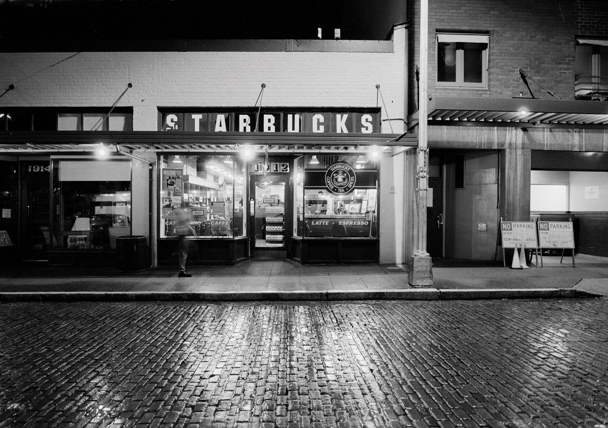

Nosso Ideal
É só um breve momento – apenas uma mão passando um copo por sobre o balcão para outra mão estendida. Mas é uma conexão. Tudo o que fazemos procura respeitar essa conexão – desde nosso compromisso com o café de melhor qualidade do mundo até a forma como nós interagimos com nossos clientes e nossas comunidades para conduzir nosso negócio de modo responsável. Desde o princípio, há mais de cinquenta anos, quando éramos uma única loja, todo lugar a que fomos, todo lugar que tocamos, nós tentamos deixar um pouco melhor do que encontramos.
